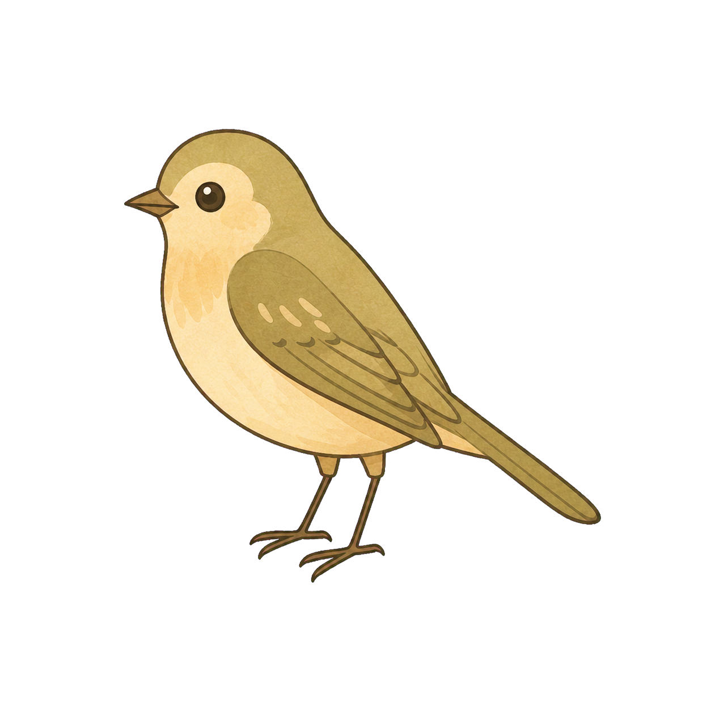
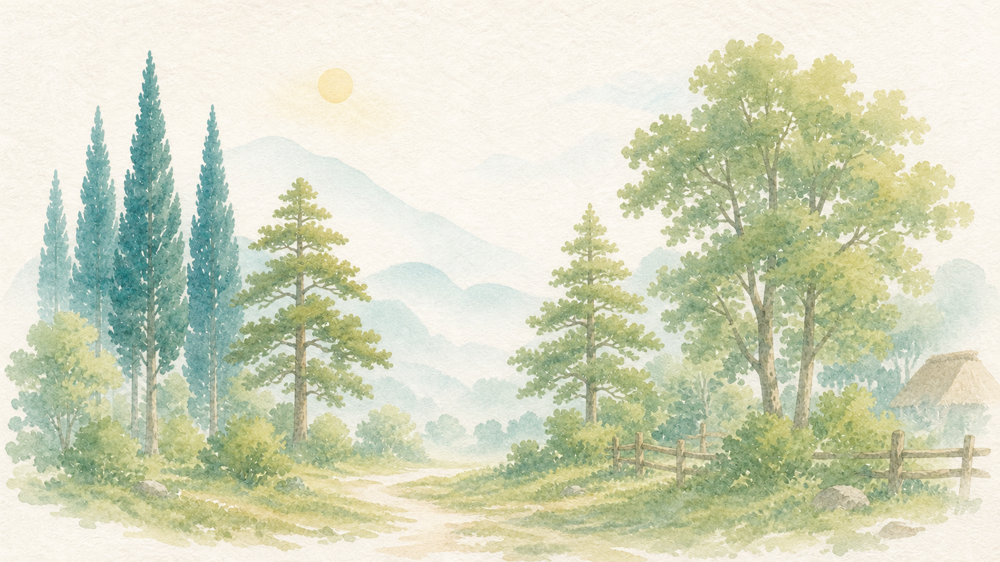

きこりのおいらに
できること
はじめて木を切る
木を切る
つづきから

木こり
日
1
所持金
0
円
体力
100
切れ味
100
%
音 あり
読み込み
評価詳細 ＋
見込み評価
—
木をクリックすると見立てが出る。
—
—
犬の見立て：
相棒がいれば
、外からは見えない芯の腐れを教えてくれる。今はわからない。
倒れる側
自分
●
目標に倒す向き
➜
予想される倒伏
—
木の傾き（引く）
┈
風（押す）
目標とのズレ
—
入れる
高さ
—
1 向きを決める
2 受け口
3 追い口
会心
ドラッグ＝視点 ホイール＝寄る スペース＝斧を振る ←→＝回す

朝 — どこへ行くか
この林へ行く
今日を終える
見立て一覧
見出しを押すと並べ替え。行を押すとその木を選ぶ。
閉じる
夕方
夜・家
体力を使わず、明日の支度をする。
財布
0円
記録をつけて翌朝へ
翌朝へ
記録先
記録1
記録2
戸口に立っている
—
話を聞く
わ か っ た
説明を飛ばす
—
判定
0
円